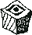
a
c
Este cuadro bla bla bla
Este cuadro me hace querer hablar de...
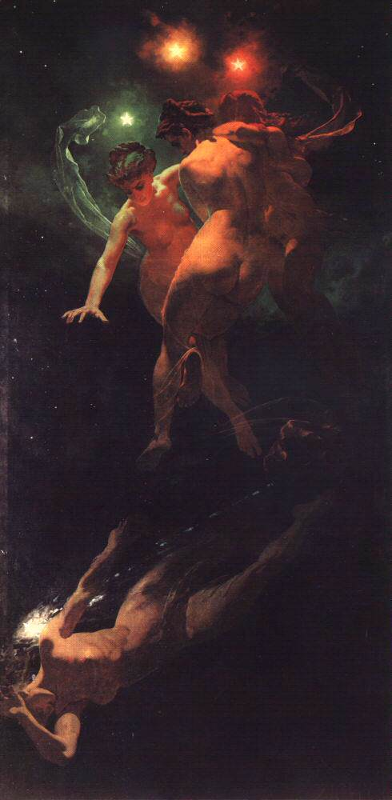
Lankeavat Tähdet
(Estrellas fugaces)
Mihály Zichy
1879
Este cuadro es una mitificación de las estrellas y estrellas Fugacfes, personificadas como mujeres bailando en el cosmos y como la figura inferior, separada del resto de estrellas y precipitándose al vacío. La obra muestra una versión diferente de la creencia múltiples culturas de que todas las personas, o personas especialmente importantes, quedan inmortalizadas en el firmamento como astros tras su muerte (creo, supongo, imagino), o tal vez está intentando unir a los ángeles y especialmente el ángel caído con un entorno tan dispar como el cosmos y el espacio exterior, ni puta idea honestamente, lo único que sé al 100% es que me encantan los colores y los elementos cósmicos de este cuadro. Mihály Zichy tiene otras obras increíbles, pero para mí esta destaca de forma exagerada entre ellas.
Este cuadro me hace querer hablar de...
Mi Kinlist!
Escucha, esto me da un poquito de vergüenza, ¿seguro que quieres ver mi kinlist? Tampoco es ninguna locura,
si no te interesa no lo mires y salimos los dos ganando...
¿No? ¿Quieres verla? Bueno, déjamne hablar
antes de otros personajes que me dan menos cosilla.
The big ones
Hay dos lobos dentro de mí. Uno de ellos muerde y tira de mis muñecas y el otro hace lo mismo en mis tobillos. Estos lobos se llaman Daiba Nana y Midori Nagumo.


Primero la pelirroja, Nagumo de CITY. Una hijaputa, hablando en claro.
Chavala de veintimedios tacaña,
caradura, egoísta y vaga. Le gusta beber cerveza y apostar en carreras de caballos.
No es una mala persona, sólo está un poco perdida en la vida y no puede pagar el alquiler. Su egoísmo viene
de la insatisfacción que le causa no haber encontrado todavía qué es lo que le hace feliz.
Como dirían los jóvenes de hoy en día, es la tía más real con hype moments y aura. Creo que cualquier chaval
a las puertas de la adultez puede empatizar con esta chica y ver más allá de su egocentrismo. She is
literally me.
Ahora la rubia, Nana de Revue Starlight. La chica más maja del universo.
Joven (de mi año she is
literally meeeee) estudiante de actuación, personificación de la generosidad, el esfuerzo y el talento, pero
aun así se mantiene humilde, tranquila y encantadora. Coser y cocinar son su especialidad! ¿Esconde algo?
Qué va! Ninguna red flag por aquí, sigue avanzando!
Creo que no hace falta señalar las similitudes y las diferencias, pero lo voy a hacer porque es relleno
gratis para mi web!
La una es una persona extremadamente generosa, hábil y preparada: Sabe cuál es su meta en la vida y lo
sacrifica todo para conseguirlo. La otra sólo se preocupa por ella misma, depende por completo de la gente
que la quiere y toma atajos para conseguir sus objetivos, que siempre son satisfacción a corto plazo porque
no tiene una meta en la vida.
Ninguno de estos dos personajes es feliz. Sus facetas de satisfacción y apatía son máscaras que usan para
afrontar el día a día porque tienen miedo. Miedo a quedarse sola y miedo a que la vida no merezca la pena
más allá de la infancia.
Ahora bien, cómo pueden ser las dos literalmente yo si son personajes completamente opuestos? Bueno, pues
porque cuando digo que son literalmente yo es porque son literalmente yo.
Ninguna persona real podría ir por la vida como van estas dos, obviamente, son extremos muy extremos, pero
yo soy el punto medio exacto. Veo mi forma de ser en ambas, veo mis carencias y veo formas de remediarlas,
veo advertencias, errores y metas. No son mi modelo vital, son pautas y me ayudan a mejorar como persona.
Estas dos patéticas lesbianas (lovingly) han marcado el rumbo de mi vida de cierta forma. Parece una
gilipollez, pero pensar qué haría mi kinnie en esta situación me ha llevado a sitios a los que no me habría
atrevido a pisar. Entre ellos independizarme, no dejar de buscar trabajo, seguir estudiando y aprendiendo,
cortar gente poco sana de mi vida, plantar cara a ciertas personas, escribir una jodida página web molona...
Por eso quería dedicarles una sección a estas dos, porque son muy importantes para mi.
what the fuck
Déjame hablarte de un personaje que me gusta mucho. No es mega hiper importante para mi como las dos anteriores, pero las similitudes entre nosotros son alarmantes.


Esta es Cas, de Bee and puppycat, otra girlfailure con la que comparto las siguientes características:
- Programadora.
- Insatisfecha con su trabajo.
- Asexual.
- Increíblemente patética.
- Fraternal.
- Manchas en la piel. (a veces?)
- Décadas sin dormir.
- Su color de pelo es mi color favorito. (what the hell)
- En serio, menuda pringada.
Esta serie no es super popular, pero si algún día la ves, tienes la obligación de pensar en mí cada vez que
Cas aparezca en pantalla.
Mi personaje fav de la ficción

Midna! Mi personaje favorito del mundo! La quiero mucho, necesito que sea feliz y que le vaya bien, voy a
besar su cabecita y acariciar su pelo, my sweet summer child.
Midna, de The Legend of Zelda Twilight Princess, es el personaje que más me gusta de cualquier obra de
ficción que conozco. Lleva siendo mi personaje favorito muchos años, desde 2015 aprox. La quiero con locura.
¿Qué es lo que me gusta de ella? Absolutamente todo.
historia
Quiero hablar de Midna y de su papel en Twilight Princess, de su crecimiento y de sus sacrificios, pero
solo me sale hablar de lo mucho que la quiero y lo guay que es. Es tan tan sdajgsdfdgk mirala es que
jfjfdjfjd ayyy es tan maja y tan bonita... Si ya has jugado al juego, sabes de lo que hablo, es la mejor. Si
no has jugado al juego (deberías jugar al juego), sólo tienes que saber que es un personaje sencillo pero
muy bien escrito, con una personalidad muy marcada y una historia muy bonita que la saga no ha sabido
replicar (Smidward Sword).

diseño
Midna es una mujer que ha perdido su cuerpo y se siente atrapada en una forma corpórea inútil y fea. El
diseño de su nueva forma refleja estas inquietudes a través de la asimetría y la antinormatividad, haciendo
caso diametralmente opuesto de los cánones de belleza femenina.
La belleza es subjetiva, pero una de las pautas más aceptadas para determinar el atractivo de un cuerpo es
su simetría. Normalmente en un diseño de personaje se suele incluir un solo elemento de acento en la
simetría: un reloj de pulsera, un broche, un lunar, un tatuaje, la raya del pelo, etc. pero el diseño de
Midna incluye muchos elementos asimétricos para que la asimetría no sea un detalle, sino la base del diseño.
Midna cuenta con: un ojo derecho pequeño, redondo y de colores vivos y un ojo izquierdo grande, estilizado,
alargado y de piedra; un colmillo en un solo lado de la boca; dos tonos de piel repartidos de forma
irregular por el cuerpo; diferentes marcas y tatuajes en ambos lados del torso y las piernas; bordes
irregulares y dispares en las orejas y los brazos y por último, una gran mano, un ógano del cuerpo
intrinsicamente asimétrico, que nace de su cabeza.
Los cánones de belleza, por otra parte, están muy claros, lo que me facilita corroborar esta filosofía de
diseño en Midna señalando todos los elementos de su cuerpo opuestos a ellos.
Las proporciones del cuerpo de Midna son un caos: su cabeza es tan grande y ancha como el resto de su
cuerpo; sus brazos son largos y delgados en relación a sus piernas, que son cortas y deformes, sus
pantorrillas y sus pies están subdesarrollados en relación a sus muslos; los dos tonos de su cuerpo
contrastan mucho entre sí y su patrón de su acentúa su tripa y disimula su pecho. Por último, sus facciones
faciales son desroporcionadas entre sí, con una nariz anormalmente chata y estrecha, un ojo prominente y una
sonrisa ancha con dientes mal colocados.
Por si no fuera poco, midna también presenta elementos que
imitan el vello corporal en los brazos y vello facial en sus mejillas, elementos evidentemente asociados a
la masculinidad y no a la normatividad femenina.
Esta antibelleza sumada a los colores enfermizos de su cuerpo (el gris pálido de un cadáver, el gris oscuro
de una infección grave, el rojo sangriento del iris y el amarillo de su esclera), los elementos monstruosos
y su aparente desnudez tiene la intención de incomodar al jugador y despertar simpatía por Midna, que tiene
que lidiar con su nueva forma de vida.
Sin embargo, es un diseño tan estilizado y efectivo que todos estos elementos inquietantes son fáciles de
ignorar cuando el jugador empieza a encariñarse con el personaje. Es un diseño muy mono, es adorable, quiero
pellizcar sus prqueñas mejillas drenadas de sangre.
Por último, quiero mencionar que el arte conceptual de midna (aqui abajo) es super interesante y
cada uno va tirando en medidas diferentes a los puntos clave de su diseño. Su versión final me parece el
punto medio perfecto y es mi favorita.

Es un poco frustrante ser fan de este personaje por un par de motivos. Creo que jamás he visto una mayor víctima de mischaracterization por parte de la comunidad, me da la impresion de que la gente sólo recuerda las primeras pocas horas del juego, cuando es borde y resentida, y se olvida de la evolución y la parte verdaderamente entrañable del personaje. Por no hablar de lo absurdamente horny que está todo el mundo con este personaje. Aunque sea asexual, entiendo lo que hace atractiva a una persona, pero jamás lograré comprender el efecto que tiene un personaje con esta complexión física en la mente de tanto pajero. Este es uno de esos personajes de los que NO puedes buscar imágenes directamente en google, porque no exagero cuando digo que la mitad de los resultados son porno. I hate it here.
Kinlist
Bueno, venga, ya he escrito suficiente, aquí tienes embarrassing information about myself.
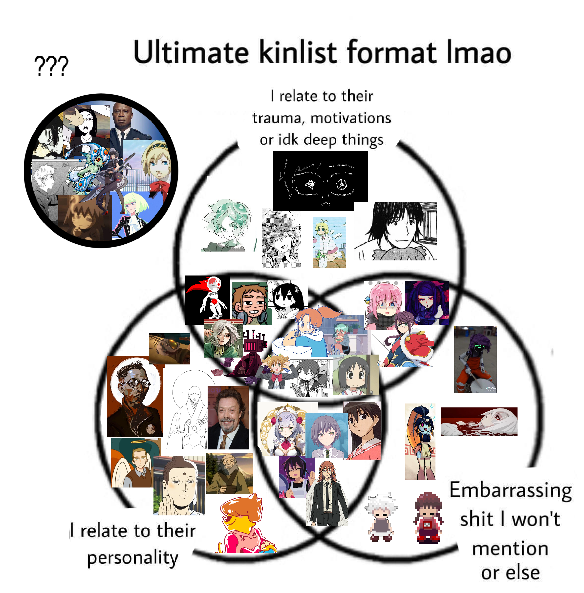
Tienes que avisarme si te sientes absolutamente feral por alguno de estos personajes! Vamos a hablar de ellos!
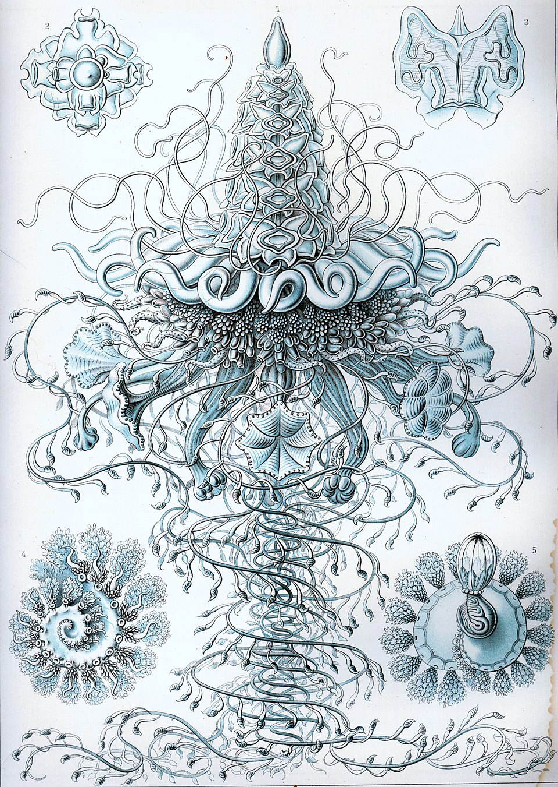
Siphonophorae 37
Sifonóforo 37
Ernst Haeckel
1904
Esta obra es una litografía de un sifonóforo, un animal marino fascinante del que te recomiendo investigar en otro momento. La obra forma parte de la Kunstformen der Natur, una enciclopedia ilustrada de diversos organismos, algunos de ellos dibujados por primera vez en la historia. En este libro Haeckel es capaz de extraer una belleza completamente única en el reino animal de criaturas tan insignificantes y poco documentadas como radiolarios, sifonóforos, nudibranquios, ctenóforos, crinoideos y otras criaturas ignoradas por la comunidad científica. Toda la obra de Ernst Haeckel es conmovedora en este aspecto, por eso he escogido la ilustración de un animal que me gusta mucho, pero tiene muchos más grabados repletos de detalles que merecen mucho la pena, como Discomedusae, Decapoda, Stephoidea, Arachnida... La enciclopedia es fácil de encontrar en pdf si quieres profundizar más.
Este cuadro me hace querer hablar de...
Honestamente
Pokemon no me vuelve loco. Llevo ya unos cuantos años desconectado de la saga y aunque les tengo mucho cariño a los juegos viejos (hasta la 6a gen aprox) no creo que sea algo que me defina mucho.
Dicho esto
Pokemon ha superado los 1000 personajes diferentes y esto ha hecho que empiece a surgir la idea de que "todos son el favorito de alguien" y me parece una cosa muy cuca y muy mona. Me gusta saber el pokémon favorito de cada persona porque siempre da sorpresa o ternura, además, todo el mundo tiene un pokemon favorito y no hay opiniones erróneas!
Cuando digo que me gusta pokemon no me refiero necesariamente a los juegos o al competitivo o al lore. Podría ser analfabeto y me gustaría exactamente lo mismo. Lo que me gusta son los bichines y lo majos que son.
Originalmente aquí había puesto un bracket con algunos pokemon como para ver ooh mira como unos me gustan mas que otros ooooh. En fin, en la versión de escritorio funciona y puedes verla sin problemas incluso desde móvil, pero no tienes ni la más mínima idea de la pereza que me da adaptarlo todo a una pantalla más pequeña. Es culpa mía por haber hecho un trabajo horroroso originalmente pero qué le voy a hacer. Igual más adelante sí que lo paso aquí, no sé.
Mi pokemon favorito es mawile.

Two Earthlings 2
Dos Terrícolas 2
Jonh Brosio
2009
Encontré este cuadro a partir de otras obras más famosas de su autor, los cuadros en los que ilustra un animal enorme en un entorno suburbano. Son graciosos y surrealistas, así que me llamó mucho la atención cuando encontré esta obra y cuando leí el título me enamoré de ella. Este cuadro me hace sentir lo mismo que siento cuando miro al cielo nocturno y reconozco constelaciones con nombres e historias que les dimos hace miles de años. Siento cercanía con personas que no he conocido y que ya no están, pero con este cuadro siento una unión con un ser con el que no podría distar más. Ambos somos terrícolas.
Este cuadro me hace querer hablar de...
Cosas de las que podría sacar otra categoría pero no me apetece escribir tanto!
- Mi instrumento favorito es el violín.
- Me encantan los animales, pero especialmente las criaturas marinas.
- Me interesa mucho el budismo como filosofía de vida.
- Mi sabor de helado favorito es el de limón.
- Me gusta mucho cocinar y me atrevería a decir que se me da bien.
- Tengo conocimientos enciclopédicos sobre las primeras temporadas de Los Simpsons.
- Mi color favorito es el turquesa.
- Mi comida favorita es el arroz con tomate y huevo frito, soy un chico sencillo.
- Mi cumpleaños es el día de la mujer trabajadora.
- No me gusta nada el sabor del alcohol, pero aun así bebo de vez en cuando.
- Hago el crucigrama de El País casi todos los días y cada uno es más mierdón que el anterior.
- Me gustaría mucho aprender a cantar en condiciones.
- Varias personas me han dicho que les recuerdo a sus abuelas.
- Me encantaría tatuarme pero me da miedo de que mi piel sensible haga que quede feo.
- Soy neurotípico!
- Tengo un power point de 3 horas de la historia del mundo de Rain World pendiente de ser ampliado.
- Me gusta mucho DnD pero jamás he tenido un grupo estable.
- Me he criado en el campo.
- Mi lugar favorito del mundo es el parque de la torre de Hércules en A Coruña.
- No sé qué hacer con mi vida!
- Me gusta mucho hacer regalos.
- Mi tarta favorita es la red velvet.
- Sigo jugando Pokémon Go.
- Me paso los viajes largos apuntando ideas en una libreta sobre los juegos que quiero hacer.
- Me gusta ir preparado para todo. Suelo llevar encima tiritas, pañuelos, dinero suelto y un kit de costura.
- Si quieres regalarme flores, regálame tagetes (patula nana a poder ser).
- En algún momento quiero adoptar dos ratas y llamarlas Hambre y Piojos.
- Me pirran las historias existencialistas a través de personajes autómatas o transhumanos.
- Creo que como especie deberíamos darle un descanso al desarrollo informático hasta que hayamos pulido lo que tenemos ahora.
- Mi estación del año favorita es la Primavera.
- Las cosas que más miedo dan en el mundo son las serpientes y el sueño.
- Tengo una mancha en la piel que me recorre el brazo derecho.
- La sintáxis se me daba increíblemente bien en el cole y las mater terriblemente mal.

Paisaje con las Tentaciones de San Antonio
Claudio de Lorena
1638
Este es un cuadro para inspeccionar con lupa, te dirige la mirada a donde quiere para que los detalles se revelen lentamente a medida que ves el cuadro.
Primero te fijas en San Antonio rezando en unas ruinas, con un haz de luz iluminando su rostro, otro cuadro religioso qué bien, pero después miras el castillo que hay detrás, te impresionas con su tamaño, está bastante guapo y tu mirada baja flotando por el río hasta encontrar a los demonios, que avanzan en masa hacia la derecha, detrás de nuestro Antonio, donde están haciendo una inmensa fogata, puedes ver pilas de leña y ascuas flotando detrás de las ruinas, escondiendo el fuego, porque si no sería de lo primero que te fijas en el cuadro.
Finalmente, tu mirada regresa al inicio, a San Antonio y te das cuenta del meollo, dos brazos delgados en un ser deforme tiran de la ropa de San Antonio, escondido en el mismo centro del cuadro interactuando con el elemento más llamativo de la composición.
Habré esscrito mil veces en esta página que no entiendo mucho de arte, pero me impresiona mucho la forma en la que está hecho este cuadro.
Este cuadro me hace querer hablar de...
Cómo es que todo el mundo sabe hablar de música??
He escuchado música todos los días de mi vida desde que era un pimpollo, preferiría vivir sin piernas que vivir sin música, es una de las mejores cosas que tiene la vida y sin embargo odio hablar de ella.
¿Por qué todo el mundo conoce y sabe diferenciar todos los géneros musicales? ¿En qué momento de la vida se aprende eso? Quiero escuchar música, no ponerme a estudiar nomenclaturas, gracias.
No me molesta que alguien piense que soy ignorante, tampoco sé diferenciar marcas de coche y soy incapaz de acordarme de los nombres de los actores, pero siempre me ha dado la impresión de que el gusto musical se usa como herramienta para valorar a una persona y eso sí que me fastidia, simplemente hay música que me gusta y música que no me gusta y la música y los gustos son conceptos abstractos difíciles de delimitar. No puedo definir mis gustos con etiquetas y un puñado de artistas y álbumes que me gustan.
Un puñado de artistas y álbumes que me gustan
Bueno, mira, no me gusta esta forma de comunicar lo que me gusta pero es la única que se me ocurre, así que voy a recoger lo que haya escuchado últimamente y te voy a explicar en pocas palabras qué tienen que me hace tilín.
Modest Mouse
Creo que son relativamente famosetes, me gusta mucho la voz jodida de Isaac Brock y el contraste del tono entre sus dos discos más famosos Good News For People Who Love Bad News y We Were Dead Before The Ship Even Sank, que son prácticamente lo único que escucho de ellos.
Cage The Elephant
No sé qué son, voy a decir rock también. Mi disco favorito suyo es Melaphobia y lo que más me gusta es la parte instrumental, no sé si lo que estoy escribiendo tiene algo de sentido, pero la variedad y la fuerza de los instrumentos en algunas canciones me da en la parte correcta del cerebro.
Harley Poe
Aquí ya no tengo ni idea, ¿folk? Mucha guitarra acústica, una voz muy chula y enérgica y letras edgys. Me gustan mucho también sus covers de Have a Great Life.
Chapell Roan
No sé si has llegado a la sección de pride pero soy bastante asexual, así que es bastante raro que escuche canciones sobre lo duro que folla la persona que las canta. Ahora bien, no sé qué tiene Chapell Roan (seguramente el rollo drag, una voz espectacular y letras devastadoras) pero no me importa cuando se pone a cantar horny. Soy incapaz de elegir entre Red Wine Supernova y Picture You.
Paloma San Basilio
Reina. Diva. Diosa. Eterna.
of Montreal
Aquí ya me pierdo, ni puta idea de lo que está cantando este queer.
Will Wood
Prefiero su música actual por encima de las canciones edgys que tiene con los tapeworms, pero me trago cualquier cosa que haya hecho. Aun así, In Case I Make It es bastante hit or miss para mi, pero dios mío cuando hitea... No puedo elegir entre Tomcat Disposables, Against the Kitchen Floor y Becoming the Lastnames y Euthanasia siempre me hace llorar.
PRINCESS PRINCESS
No tengo ni idea de lo que me están diciendo pero me encanta la energía y la voz de la cantante. Viene de locos para escuchar mientras escribes, para no centrarte en la letra.
Misha Panfilov
Mi otra alternativa de música, este tío hace música instrumental muy tranquilita que me pongo para cualquier cosa. Siempre termina colandose en el wrapped.
The Dø
Yo qué sé simplemente suena bien, no me está convenciendo este sistema.
Vale, suficiente
Mira, si sigo así no voy a acabar nunca. Escucho mucha más variedad que todo esto que te he contado y ni siquiera diría que todos los artistas que te he mencionado son de mis favoritos. Creo que es más fácil si te dejo una playlist aquí abajo y tú ves un poco el rollo.

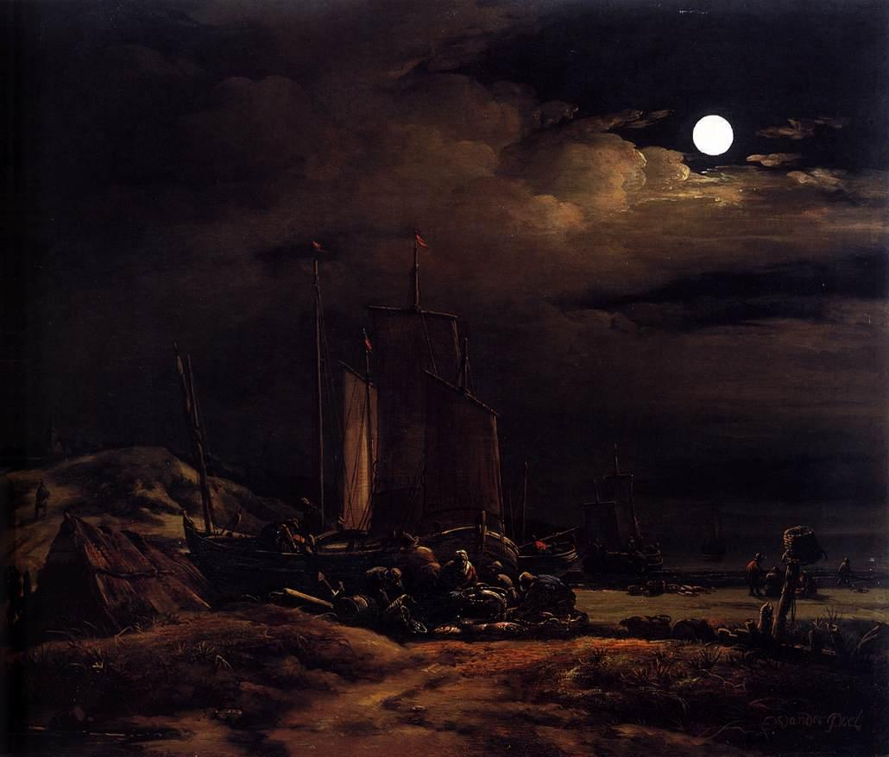
Seashore by Moonlight
Costa a la Luz de la Luna
Egbert Lievensz Van Der Poel
1664
Creo que tiene que ser muy complicado plasmar el cielo nocturno en pintura capturando una mera fracción de su auténtica belleza. Yo no siquiera soy capaz de conseguirlo con una cámara, y no conozco otro cuadro fuera del impresionismo que capture tan bien. Dios cómo me gustan el cielo y las nubes y el Sol y la Luna y las estrellas.
Este cuadro siempre me recuerda a...
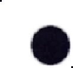
Hola, ¿sabías que me gustan los videojuegos?
Llegados a este punto ya es evidente, no querría ser gamedev si no me encantaran los videojuegos. Juego sobre todo a juegos independientes porque me gusta la variedad y los juegos hechos con pasión.
Te voy a hablar de un puñado de juegos importantes para mi y tú te vas a callar y vas a leerlo enterito, vale?
Rain World
Empezamos heavy. A día de hoy, Rain World (+ downpour) es mi juego favorito. Si quieres llevarte una recomendación de esta lista, que sea Rain World, aunque te cueste y creas que no es para ti. Rain World es de los pocos juegos que de verdad justifica su dificultad con sus temas centrales y su historia (fuck you dark souls). Creo que todo el mundo puede encontrar valor en este juego si consigue pasar por los retos que le plantea.
¿Por qué merece la pena Rain World? Para empezar, es el juego más bonito que te vas a encontrar. Cada pantalla es un fondo de escritorio y tu motivación durante buena parte del juego para avanzar es explorar zonas visualmente espectaculares. La capacidad de inmersión que tiene Rain World es impresionante, consigue activar la parte primitiva de tu cerebro que busca constantemente depredadores escondidos en el escnario y el miedo que sientes al ver una criatura nueva sin saber con seguridad cómo afrontar el encuentro es muy real.
Sin entrar en spoilers, la escala del mapa y de algunas zonas parece una exageración, pero es real. El contraste de las mecánicas y de la historia es una genialidad, el sistema de movimiento es extremadamente (te voy a coger de los hombros y te voy a repetir, extremadamente) complejo, el mundo de Rain World es una de mis cosas favoritas y te puedo hablar de él durante unas pocas horas, tengo un power point preparado, y la forma en la que explora sus temas a través de ese mundo que tanto me gusta hace que sea mi juego favorito del mundo. De verdad, si alguna vez lo ahs probado y lo has dejado, dale otra oportunidad.
Rain World no me inspira a crear poque quiera hacer algo parecido, Rain Wolrd me inspira a crear a pesar de que sé que jamás voy a llegar a crear nada parecido.
Viendo imágenes del juego parece mentira que todo lo que te estoy diciendo sea verdad.

ABZÛ
ABZÛ es una carta de amor a la vida acuática y, por lo tanto, es una carta de amor a mí también. Sentí ABZÛ como una experiencia completamente personalizada y me enamoré de él. No diría que es un juego destacable por su mensaje o su diseño o sus mecánicas, simplemente ha conectado extremadamente bien conmigo y de eso es de lo que va el arte.

Cave Story
Cave Story es un juego que me ha inspirado mucho como creador. Es un juego extremadamente sencillo elevado puramente por el talento y las ideas de su creador, Pixel. Cuando jugué Cave Story no paraba de sorprenderme con la creatividad con la que Pixel expandía el juego más allá de sus limitaciones. Es un verdadero ejemplo de cómo con pasión y originalidad puedes hacer que tu obra sea más que la suma de sus partes, cosa que a mi me hace confiar muchísimo más en mis ideas y mis capacidades como programador.

Townscaper
Townscaper es algo que apenas cuenta como un juego, pero que encapsula perfectamente lo que me gusta de los videojuegos. Townscaper es un mapa con una rejilla irregular en la que puedes crear edificios haciendo clic. Es pura experiencia. Entra, prueba lo que el juego tiene que ofrecer hasta que tú lo consideres suficiente y vete. De hecho, pruébalo ahora mismo.

OneShot
Creo que OneShot fue la chispa que hizo que me interesara de verdad por el desarrollo de videojuegos. En parte porque, como cave story, es un juego sencillo elevado por el talento del equipo tras él (tengo que destacar la música, el apartado gráfico, el guión y la programación), pero sobre todo por el propio equipo. Son un trío de gente muy guay, tanto que les seguía en twitter por otras cosas antes de jugar al juego sin saberlo, y les veo constantemente contentos con sus proyectos y con sus vidas y me anima a seguir adelante con esto sabiendo que hay gente que lo ha conseguido.

Outer Wilds
🤫

A short hike
A short hike es definitivamente el tipo de juego que me gustaría hacer. No por las vibes cozy, sino por el diseño abierto y la oferta constante al jugador de pequeñas experiencias interesantes.
De hecho, creo que se puede notar esta idea en el diseño de esta misma página web.

Sayonara Wild Hearts
Sayonara Wild Hearts es un juego redondísimo, de lo más cercano a la perfección que me he encontrado nunca. Este juego me inspira de lo bueno que es. Dios cómo me gusta Sayonara Wild Hearts.

Picayune Dreams
Picayune Dreams es un cúmulo de muchas cosas que me gustan. Te lo describo rápido a ver si te interesa: es un bullet heaven breakcore que cuenta su historia a través de segmentos que parecen sacados de yume nikki. No puedo expresar suficiente lo mucho que me encanta que el juego incoprore su propio código en la estética y las mecánicas del juego.

Disco Elysium
Siento ser otra persona más que viene a darte la tabarra con Disco Elysium, pero si es el mejor juego jamás escrito lo será por algo. Simplemente cómpralo (o piratéalo, sólo Dios sabe a quién va a ir a parar el dinero después de lo que le pasó al estudio). Te va a hacer reír y después te va a hundir un puñal en la boca del estómago y después te va a hundir otro puñal justo al lado y después va a cubrirte a patadas.

Yume Nikki
Me gustan mucho todos los juegos "clon" de yume nikki, no sé qué es lo que tiene la fórmula pero me encanta este sistema de exploración y el subconsciente y el sueño me parecen temas extremadamente curiosos y me dan un poco de miedito. Mi favorito es .flow y alguna vez me gustaría hacer un juego del estilo.
Puedes jugar a todos estos juegos aquí.

Shovel Knight
Son todos absolutos juegazos, pero Specter of Torment está muy por encima. Qué maravilla de juegos, si no los has jugado y te gustan los juegos que rebosan carisma deja de perder el tiempo y comprate la colección de las 4 campañas.

Mi Backloggd
He jugado a muchos más juegos que estos! Ni siquiera te he enseñado todos mis juegos favoritos, así que te dejo aquí mi backloggd para que curiosees. Intento mantenerlo actualizado, pero no estoy jugando con tanta frecuencia con la que me gustaría.

Study after Velazquez's Portrait of Pope Innocent X
Estudio del retrato del Papa Inocencio X de Velázquez
Francis Bacon
1953
Aquí nos encontramos ante un cuadro que, en términos artísticos, mola que flipas. Esta obra es una versión distorsionada de un retrato papal de Velázquez bastante normalito y aburrido.
Creo que lo que más me llama de este cuadro me viene a raíz de mi infancia y juventud en una familia cristiana y mi educación en un colegio de monjas, es muy catártico después de sentir tanta aversión a la iglesia durante tanto tiempo ver un retrato del Papa desfigurado, con una cara color cadáver derretida, rodeado de cortinas que parecen llamas y una expresión de angustia inhumana.
Alguien debería hacer una bandera con los colores de este cuadro.
Este cuadro siempre me recuerda a...
Here's a doozy!
Mi sexualidad es mística y mi género esotérico. Llevo años estudiando esta misteriosa faceta del universo y no llego a comprenderla al 100%, pero voy a intentar explicarte todo lo que he aprendido. En general, prefiero no ser percibido, pero si algún día estás en un apuro y no tienes más remedio que percibirme como individuo, me considero un hombre aroace GNC. La explicación detallada es más complciada que eso, así que voy a ir punto por punto:
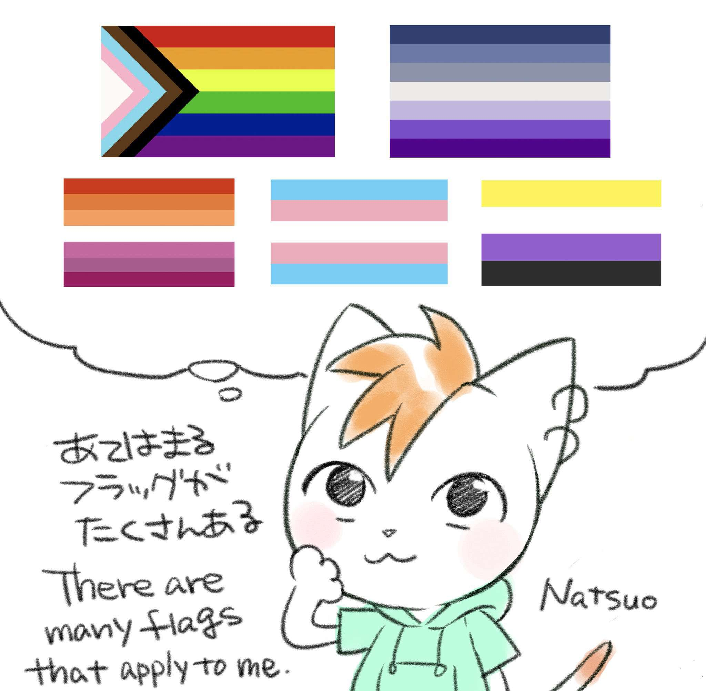
Arromántico (aro)
El arromanticismo es un término paraguas que recoge a todas aquellas personas que sienten poca o ninguna atracción romántica por otras personas, muy clave la distinción entre el amor romántico (el de tu pareja) y el amor platónico (el de tu familia y amigos). A mi me basta con el amor de mis amigos. Nunca me he enamorado y tampoco siento la necesidad de hacerlo. Sin embargo, me parece muy bonito compartir tu vida con otra persona y me gustaría poder hacer eso algún día. Tal vez con una persona que entienda el amor de la misma forma que yo.
Asexual (ace)
De forma similar, nada o poca atracción sexual. No sólo es que no me guste el sexo, es que genuinamente no lo pillo. Para mi es como some looney tunes kinda shit, se me hace infantil, si es que eso tiene algo de sentido. No entiendo el peso que se le da en las relaciones o cómo puede arruinar una amistad. No entiendo el uso del sexo en obras de ficción. No entiendo por qué todo el mundo pierde la cabeza por follar. En resumen, el sexo como acto es bastante whatever y me da igual, el sexo como concepto social me da una pereza infinita.
Aroace
Aroace es la combinación de ambos y nuesta bandera es la mejor sin ninguna duda. Evidentemente no es un 50/50 exacto, en mi caso diría que soy algo más arromántico.
Bisexual
¿Recuerdas cuando he mencionado que no me cierro a compartir mi vida con la persona indicada? ¿De qué género es esa persona? Literalmente cualquiera, no podría importarme menos. Con suerte será una mujer y los heteros nos dejarán en paz.
Hombre
Después de reflexionar mucho sobre mi género no tengo ningún problema en presentarme como hombre cis. Sin embargo, no hay ninguna parte de mi que se enorgullezca de ser hombre. No tengo disforia, no tengo euforia, no tengo envidia del aspecto o el género de otras personas. Mi género me genera (jejeje) una profunda indiferencia. Creo que la mejor forma de describirme es como una persona agénero, pero no me importa lo suficiente como para explorar ese aspecto de mí.
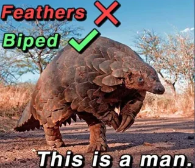
GNC
GNC significa Gender NonConforming. se refiere a una persona que expresa su género de forma no convencional. Vestir y presentarse de forma masculina es mi bread and butter pero también me gusta maquillarme y vestir femenino de vez en cuando y me queda espectacularmente bien.
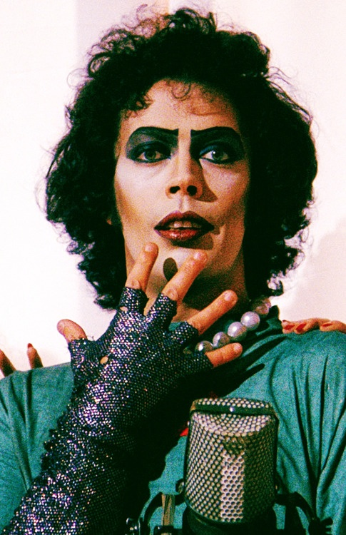
Pronombres
He/Him. Puedes llamarme en femenino de vez en cuando, pero no siempre. Me gusta dejar claro que no soy una mujer, por movidas de hace un tiempo!
En resumen, soy muy fan de la teoría queer y no quiero más que amigos.
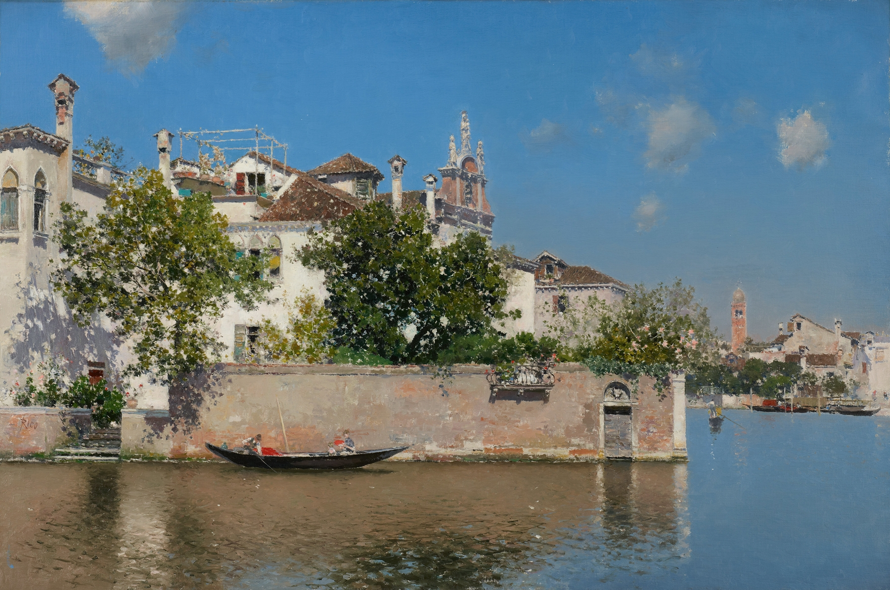
Giardino del Palazzo Vendramin
Jardín del Palacio Vendramin
Martín Rico
1650
Descubrí a este artista en el Museo del Prado en Madrid y me encantaron sus paisajes. Los colores son preciosos, las escenas tienen muhcísima personalidad, retrata partes de España que adoro y en general es un artista redondo, cualquiera puede ver su obra y decirte esto.
Sin embargo, la razón principal por la que me gustan mucho estos cuadros es porque me recuerdan mucho a los paisajes que solía pintar mi abuela. La única pega es que Martín Rico no pintón ni la mitad de bien de lo que pintaba ella.
Este cuadro siempre me recuerda a...
Mangos, animes y otras japonesadas
Venga, tengo la intención de que esta sección sea muy cortita, porque no me considero para nada un fan del anime ni del manga, pongo esta sección porque lo que consigue gustarme de este medio me gusta MUCHO. Hace unos años me encontré un slideshow de tiktok de recomendaciones de anime titulado shows where girls get to be silly!! (no fanservice) y creo que es la categoría que mejor define lo que me gusta.
MyGo / AveMujica
Este último año he descubierto que me gusta mucho el género de "grupo de mujeres se junta para tocar música con evidente tensión romántica de por medio" me he juntado con un amigo y nos hemos visto Bocchi, Girls band cry, Mygo, Ave Mujica, Love Live y Love Live sunshine. La fórmula simplemente no envejece.
Creo que me quedo con Mygo y Ave Mujica porque
Extrañamente, en estas series siempre hay una escena en un acuario.
CITY
Una comedia costumbrista y absurda de una joven adulta buscando qué cojones hace con su vida. Si no te llama mucho el argumento no te preocupes, también va sobre sus dos amigas, sobre un restaurante de comida occidental, sobre un equipo de fútbol, un dibujante, el equipo editorial de la revista de la ciudad, tres viejos que quieren revivir su juventud, un señor muy majo, un policía, la familia rica de la ciudad, el dueño de un anticuario, un chef, una vieja y alguna persona más.
Es tan caótico como suena, complementa muy bien su humor y tiene unos cuantos momentos bonitos y tristes. Dale una oportunidad!
CITY the animation
HOOOOLY SHIT CITY THE ANIMATION??!?
Así es, querido lector, la adaptación animada de CITY comenzó a emitirse en julio de 2025 y no te puedes hacer una idea de lo mucho que significa mara mi. ¿Que qué me parece la adaptación? Bueno...
Entiendo que es un mal necesario, pero están cortando y reestructurando cosas que me parecen demasiado importantes como para simplemente no enseñarlas, pero bueno, merece la pena por poder verlo en movimiento y con música, además permite tanto al anime como al manga tener una identidad propia. El episodio 5 es una jodida obra maestra.
Houseki no Kuni
Obra budista estándar, sobre alcanzar la felicidad a través del ciclo del sufrimiento. De por si estas historias me gustan mucho, pero a este comic se le va mazo la flapa con elementos de su mundo y mitología y hace que me guste aún más. La exploración del personaje de Phos, el protagonista, y lo que le hace humano poco a poco es una barbaridad.
Revue Starlight
Yuri. Máxima expresión del amor romántico entre dos mujeres jamás puesto en una pantalla. Dios mio these bitches gay. La serie va de un grupo de chicas en una academia de artes escénicas y su relación con el escenario y entre ellas. Es una serie extremadamente rewatcheable.
A pesar de que me gusta mucho MUCHO la serie, no hay que olvidar la película, que es igual de buena, los mangas, que son menos importantes pero hay unos cuantos y merecen mucho la pena; las 7(?) representaciones musicales diferentes y la visual novel de El Dorado, que es muchísimo más gay y muy bonita.
Girls' last tour
Exploración del amor platónico y la naturaleza de la civilización a través de el viaje de dos chicas en el apocalipsis. Me gusta mucho más el manga, pero por desgracia para mi la música del anime es preciosa y solo por eso hace que también merezca la pena. SI te interesa vertelo, elige el que más rabia te dé.
Dungeon meshi
O como se trajo a España "Tragones y Mazmorras" es un manga de fantasía muy tonto y cuco. Es muy completo para lo corto que es. Tiene un buen cast de personajes bastante elaborado, un mundo muy bien pensado y una historia decente con un final satisfactorio. Lo que más me gusta es que se nota que la autora ha dedicado mucho tiempo a pensar cómo puede influir la presencia de todos estos elementos fantásticos en la vida cotidiana, más allá de la base de la que parte (dungeons and dragons). Rezuma realismo mágico. También me gustan mucho un puñado de blorbos y en general podría morir por varios de sus personajes.
Yotsuba
Conoces Yotsuba, aunque ahora mismo no te venga a la cabeza, sabes lo que es Yotsuba y sabes que es muy bueno. Así que por qué no te lo lees y ya?

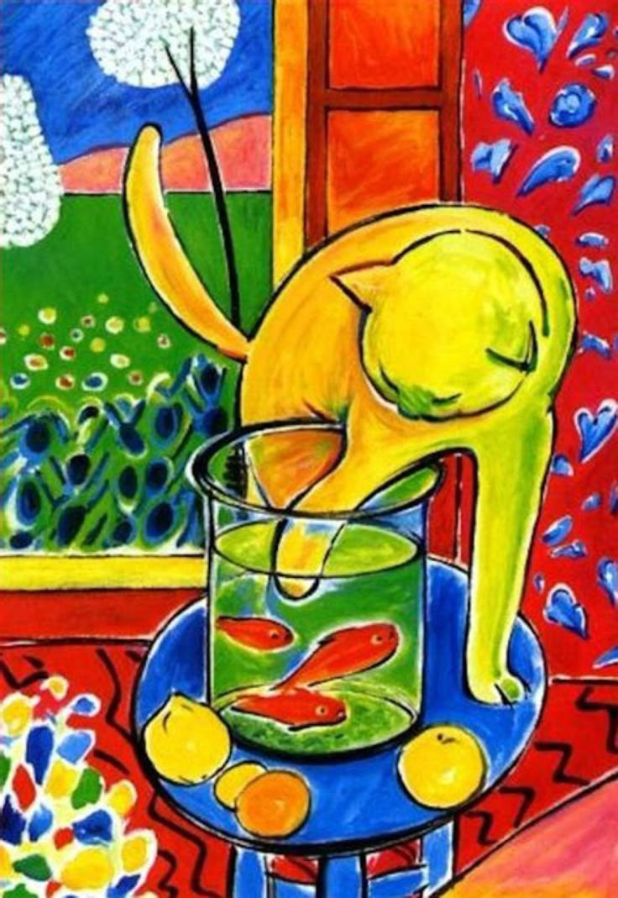
Il gatto di Henri Matisse
El gato de Henri Matisse
Gion Gianantonio Muratori
1999
Este cuadro me ha vuelto loco durante un buen rato. Lo he escogí sin darle muchas vueltas, "oh, sí, el cuadro del gato de Henri Matisse, eso le dará un poco de contraste y color al museo lleno de cuadros oscuros y realistas", pero no encuentro una imagen en condiciones del cuadro, sólo sitios de prints, reproducciones y diferentes versiones del cuadro, "wow" pienso, "no sabía que este cuadro era tan popular, será mejor que busque un escaneo del cuadro original de un museo", pero resulta que este cuadro no existe en ninguna colección de ningún museo y pienso "mierda, ¿de dónde ha salido este cuadro?".
Encuentro un post de reddit de gente haciéndose la misma pregunta y el consenso general es que es un cuadro generado por inteligencia artificial, pero en ese momento yo ya había encontrado gente hablando del gato de matisse en blogs de 2020, cuando la ia generativa no nos había arruinado la vida a todos, así que empiezo a buscar resultados por fecha, hasta que por fin encuentro un artículo en italiano acreditando a un tal Gion de haber pintado este cuadro en 1999.
Gianantonio Muratori o Gion pintó una colección de 10 cuadros, preguntándose cómo habrían retratado varios artistas famosos a sus gatos de haberlos tenido. Es una idea muy cuca y graciosa que es lo que me gusta de este cuadro. Échale un vistazo si quieres.
Este cuadro siempre me recuerda a...
Tengo una página web!
Como desarrollador web titulado que soy, tengo una página web personal que recoge todos mis proyectos e información sobre mi. Falta mucho para que esté terminada, pero me encantaría que le echaras un vistazo!
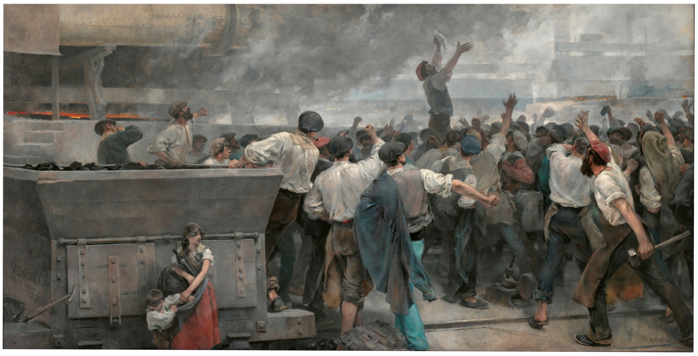
Una huelga de obreros en Vizcaya
Vicente Cutanda
1892
Pude ver este cuadro en persona en 2025 y es espectacular, principalmente por su tamaño de 2,75 metros de alto por 5,50 metros de alto. El museo tenía una sala entera dedicada a él y un marco grueso que imitaba metal con remaches, también me llamó mucho la atención la firma del autor diegética a la escena.
Esta obra, como muchas otras de Vicente Cutanda, muestra la vida, la infancia y la lucha de la calse obrera española durante la revolución industrial, concretamente en el sector metalúrgico vasco. Este cuadro me recuerda que las cosas tienden a mejorar pero que no mejoran solas y es algo en lo que pienso mucho últimamente, en parte por la etapa vital por la que estoy pasando y en parte porque me cuesta encontrar esperanza en el mundo en el que vivimos.
Me gustaría vivr para ver un mundo que me guste y haré todo cuanto esté a mi alcance para lograrlo.
Este cuadro siempre me recuerda a...
Pequeña galería de fotos que me gustan

"samsara"
31/12/2025 Peñagrande

"corazón"
31/10/2025 Peñagrande

"chinook"
24/09/2025 Barajas

"abejita"
13/07/2025 Soria

"amigo"
26/04/2025 Peñagrande

"ojo"
31/12/2024 Segovia

"sistema nervioso"
31/12/2024 Segovia

"planeta"
05/05/2023 Soria
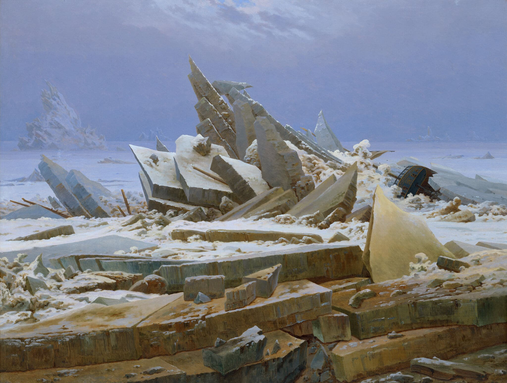
Das Eismeer
El Mar de Hielo
Friedrich, Caspar David
1824
No me explico cómo el cuadro más famoso de este tío es El Caminante sobre el Mar de Nubes ¿estás viendo esto? Mola una barbaridad capturar formas así en la naturaleza, formas que recuerdan a cómo erosionan las rocas, o a montañas, pero de repente ves el barco encallado en el hielo y te das cuenta de que es un retrato del océano y te da una sensación de escala aterradora porque hay trozos de hielo que son grandes como edificios y no es el único monte de hielo, sino que ves espinas en la distancia y sólo te puedes imaginar lo grandes que pueden ser y todo está contenido en el océano que es inconcebiblemente inmenso. Dios mío te lo digo en serio deberías jugar al éxito indie "Rain World" en cuanto tengas oportunidad.
Este cuadro siempre me recuerda a...
Baby steps
La verdad es que el cine no me ha interesado hasta hace relativamente poco. Los últimos 6 años me he juntado con gente que siente verdadera pasión por las películas y que quieren dedicar parte de su vida a ello.
Me gustaría hacer un top de películas o hablar de actores que me gustan, pero siento que todavía no he visto suficiente como para encontrar el patrón de qué tipo de películas son las que más disfruto. De momento, me estoy gozando todo lo que me recomiendan mis amigos, es un medio maravilloso y merece muchísimo la pena. Es muy raro encontrar una película a la que no puedas sacarle algo de valor.
Entonces, ¿por qué cojones pongo una sección de películas? Porque me gustaría ampliar esta sección más adelante y tal vez añadir una sección de televisión para poner series que también estoy descubriendo. Si te interesa mucho mucho mucho saber qué es lo que veo, te dejo mi letterboxd aquí para que curiosees, pero te aviso de que por eso mismo que me dicho, no pongo valoraciones a las películas. Tampoco uso la función de diario, solo quiero llevar un registro de las películas que voy viendo.
Mi Letterboxd


Te doy la bienvenida al museo
by HorchataGameDev
Hola! Te encuentras en el museo digital de mi página web, en esta sección te voy a enseñar algunos de mis cuadros favoritos para después contarte cosas sobre mí que no tienen absolutamente nada que ver. Si ya has visto la sección "sobre mi" de la versión de escritorio, esto es básicamente lo mismo.
Toca la flecha en la parte superior de la pantalla para avanzar y usa las flechas laterales para girarte, inmérgete en esta experiencia hiperrealista en primera persona! Es tan divertido como un museo de verdad!
Una horrenda criatura emerge de la abertura en la pared, encandilada por el olor del queso que traes contigo.
Al descubrirte, el espécimen arquea su espalda, se yergue y de sus monstruosas fauces brotan vilezas que entumecen tus tímpanos:
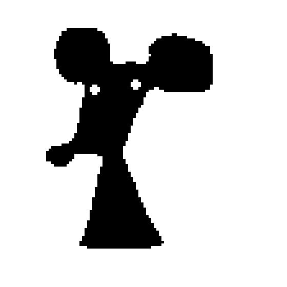
Oh, hola. Me pareció haber olido queso. ¿Tienes queso?
¿No? Entonces tal vez eres tú quien huele un poco a queso, sin ánimo de ofender.
Me llamo Romeo, Romeo el ratón.
Siempre he querido vivir dentro de un cuadro, ¿sabes? La mayoría son lugares bonitos y seguros. Bueno, salvo aquel cuadro con el gato.
Por desgracia nunca he conseguido entrar en uno de estos cuadros. Es muy complicado, ¿sabes?
¡No, no es tan facil como caminar dentro del cuadro! Bueno, sí que lo es, pero eso sólo funciona si el cuadro es el original, ¿sabes?
Cuando me enteré de que este museo exhibe una obra original me mudé sin pensarlo dos veces.
Pero todavía vivo en un agujero en la pared. ¡No consigo entrar en ninguno!
Si te fijas detenidamente, todos estos cuadros tienen modificaciones e imperfecciones. Algunas evidentes, otras imperceptibles para un ojo humano como el tuyo.
Tiene que haber una forma de entrar, bajo esas modificaciones debe haber una obra original, mis fuentes son muy fiables, ¿sabes?.
¡No señor! Ese cuadro está en esta sala y voy a dar con él.
Rebosante de decisión, la fiera regresa a una posición primitiva, sosteniendo su peso sobre sus 4 patas.
Después, en un instante, carga contra el agujero del muro desde el que ha salido arrastrándose y desaparece entre los cimientos del museo, correteando entre las paredes.
###############
x